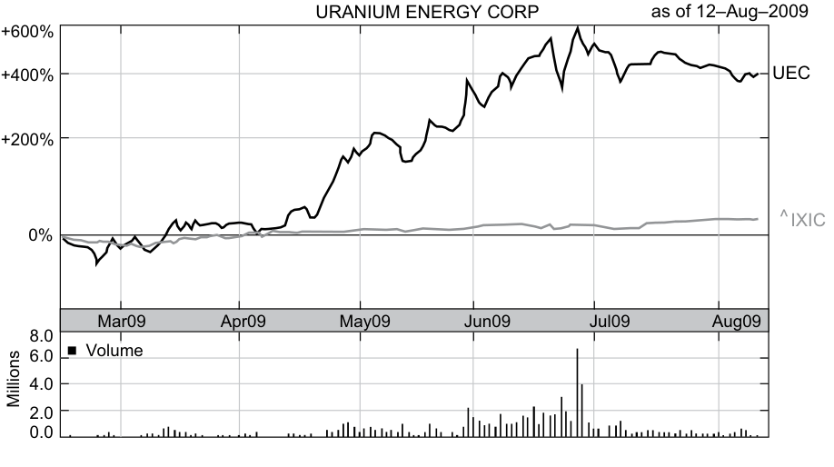
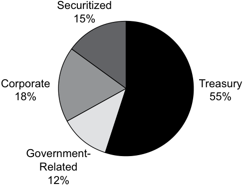
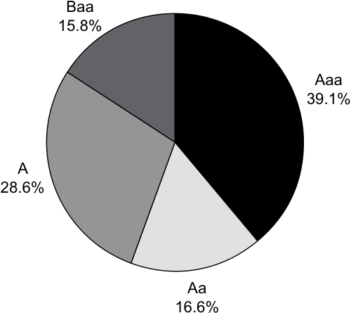
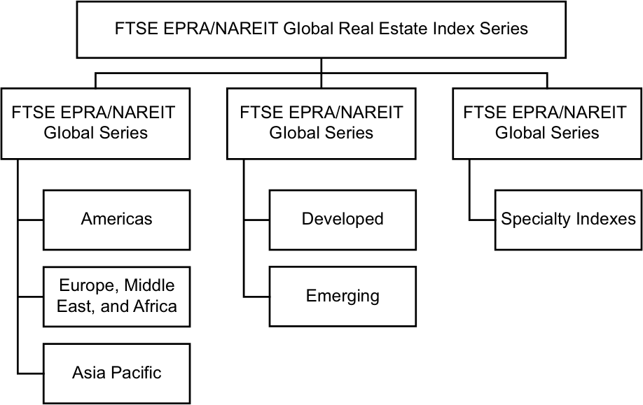

Learning Module 2 Security Market Indexes - Part 2: Uses of Market Indexes
Volume 5: Equity Investments
Learning Module 2 Security Market Indexes
Part 2/3: Uses of Market Indexes (PDF Pages 107–120)
Tập 5: Đầu tư Cổ phiếu (Volume 5: Equity Investments)
Học phần 2: Chỉ số Thị trường Chứng khoán (Learning Module 2: Security Market Indexes)
Phần 2/3: Các Công dụng của Chỉ số Thị trường (Uses of Market Indexes) (Trang PDF 107–120)
the Russell 2000 Index and the Russell 3000 Index.2 By that time, the stock value had increased by more than 300 percent. Investors continued to bid up the stock price in the weeks following the announcement, and the stock closed on the reconstitution date of 30 June at USD2.90, up nearly 400 percent for the quarter.
Chỉ số Russell 2000 và Chỉ số Russell 3000.2 Vào thời điểm đó, giá trị cổ phiếu này đã tăng hơn 300 phần trăm. Các nhà đầu tư tiếp tục đẩy giá cổ phiếu lên cao trong những tuần sau thông báo, và cổ phiếu đóng cửa vào ngày tái cấu trúc 30 tháng 6 ở mức 2,90 USD, tăng gần 400 phần trăm trong quý đó.
Exhibit 6: Three-Month Performance of Uranium Energy Corporation and NASDAQ April through June 2009
Bảng minh họa 6: Thành quả Hoạt động trong Ba tháng của Uranium Energy Corporation và NASDAQ từ Tháng 4 đến Tháng 6 năm 2009 (Exhibit 6: Three-Month Performance of Uranium Energy Corporation and NASDAQ April through June 2009)

Chú thích hình ảnh: - Tiêu đề biểu đồ: URANIUM ENERGY CORP tính đến ngày 12/08/2009 - Trục tung trên (Mức thay đổi giá %): +600%, +400% (đường UEC), +200%, 0% (đường ^IXIC – NASDAQ) - Trục hoành (Thời gian): Tháng 3/2009 (Mar09), Tháng 4/2009 (Apr09), Tháng 5/2009 (May09), Tháng 6/2009 (Jun09), Tháng 7/2009 (Jul09), Tháng 8/2009 (Aug09) - Biểu đồ dưới: Khối lượng giao dịch (Volume) tính bằng triệu cổ phiếu (Millions): 0,0; 2,0; 4,0; 6,0; 8,0
Source : Yahoo! Finance and Capital IQ.
Nguồn: Yahoo! Finance và Capital IQ.
USES OF MARKET INDEXES
CÁC CÔNG DỤNG CỦA CHỈ SỐ THỊ TRƯỜNG (USES OF MARKET INDEXES)
5
5
describe uses of security market indexes
mô tả các công dụng của chỉ số thị trường chứng khoán
Indexes were initially created to give a sense of how a particular security market performed on a given day. With the development of modern financial theory, their uses in investment management have expanded significantly. Some of the major uses of indexes include:
Các chỉ số ban đầu được tạo ra để mang lại cảm nhận về cách một thị trường chứng khoán cụ thể vận hành trong một ngày nhất định. Với sự phát triển của lý thuyết tài chính hiện đại, các công dụng của chúng trong quản lý đầu tư đã mở rộng đáng kể. Một số công dụng chính của các chỉ số bao gồm:
-
gauges of market sentiment;
-
proxies for measuring and modeling returns, systematic risk, and risk-adjusted performance;
-
proxies for asset classes in asset allocation models;
-
benchmarks for actively managed portfolios; and
-
model portfolios for such investment products as index funds and exchange-traded funds (ETFs).
-
thước đo tâm lý thị trường (gauges of market sentiment);
-
đại diện (proxies) để đo lường và mô hình hóa tỷ suất sinh lợi, rủi ro hệ thống (systematic risk), và thành quả điều chỉnh theo rủi ro (risk-adjusted performance);
-
đại diện cho các loại tài sản trong các mô hình phân bổ tài sản (asset allocation models);
-
chuẩn đối sánh (benchmarks) cho các danh mục đầu tư được quản lý chủ động (actively managed portfolios); và
-
danh mục mẫu (model portfolios) cho các sản phẩm đầu tư như quỹ chỉ số (index funds) và quỹ hoán đổi danh mục (exchange-traded funds – ETFs).
Investors using security market indexes must be familiar with how various indexes are constructed in order to select the index or indexes most appropriate for their needs.
Các nhà đầu tư sử dụng chỉ số thị trường chứng khoán phải nắm vững cách thức xây dựng các chỉ số khác nhau để lựa chọn một hoặc nhiều chỉ số phù hợp nhất với nhu cầu của mình.
Gauges of Market Sentiment
Thước đo Tâm lý Thị trường (Gauges of Market Sentiment)
The original purpose of stock market indexes was to provide a gauge of investor confidence or market sentiment. As indicators of the collective opinion of market participants, indexes reflect investor attitudes and behavior. The Dow Jones Industrial Average has a long history, is frequently quoted in the media, and remains a popular gauge of market sentiment. It may not accurately reflect the overall attitude of investors or the “market,” however, because the index consists of only 30 of the thousands of US stocks traded each day.
Mục đích ban đầu của các chỉ số thị trường chứng khoán là cung cấp một thước đo về niềm tin của nhà đầu tư hay tâm lý thị trường (market sentiment). Là những chỉ báo về quan điểm tập thể của những người tham gia thị trường, các chỉ số phản ánh thái độ và hành vi của nhà đầu tư. Chỉ số Bình quân Công nghiệp Dow Jones (Dow Jones Industrial Average) có lịch sử lâu đời, thường xuyên được trích dẫn trên các phương tiện truyền thông, và vẫn là một thước đo phổ biến về tâm lý thị trường. Tuy nhiên, nó có thể không phản ánh chính xác thái độ tổng thể của các nhà đầu tư hoặc của toàn “thị trường”, bởi vì chỉ số này chỉ bao gồm 30 trong số hàng ngàn cổ phiếu Hoa Kỳ được giao dịch mỗi ngày.
Proxies for Measuring and Modeling Returns, Systematic Risk, and Risk-Adjusted Performance
Đại diện để Đo lường và Mô hình hóa Tỷ suất sinh lợi, Rủi ro Hệ thống, và Thành quả Điều chỉnh theo Rủi ro (Proxies for Measuring and Modeling Returns, Systematic Risk, and Risk-Adjusted Performance)
The capital asset pricing model (CAPM) defines beta as the systematic risk of a security with respect to the entire market. The market portfolio in the CAPM consists of all risky securities. To represent the performance of the market portfolio, investors use a broad index. For example, the Tokyo Price Index (TOPIX) and the S&P 500 often serve as proxies for the market portfolio in Japan and the United States, respectively, and are used for measuring and modeling systematic risk and market returns.
Mô hình định giá tài sản vốn (capital asset pricing model – CAPM) định nghĩa beta là rủi ro hệ thống của một chứng khoán so với toàn bộ thị trường. Danh mục thị trường (market portfolio) trong mô hình CAPM bao gồm tất cả các chứng khoán rủi ro. Để đại diện cho thành quả của danh mục thị trường, các nhà đầu tư sử dụng một chỉ số thị trường rộng (broad index). Ví dụ, Chỉ số Giá Tokyo (Tokyo Price Index – TOPIX) và S&P 500 thường đóng vai trò là đại diện (proxies) cho danh mục thị trường tại Nhật Bản và Hoa Kỳ tương ứng, và được sử dụng để đo lường cũng như mô hình hóa rủi ro hệ thống và tỷ suất sinh lợi thị trường.
Security market indexes also serve as market proxies when measuring risk-adjusted performance. The beta of an actively managed portfolio allows investors to form a passive alternative with the same level of systematic risk. For example, if the beta of an actively managed portfolio of global stocks is 0.95 with respect to the MSCI World Index, investors can create a passive portfolio with the same systematic risk by investing 95 percent of their portfolio in a MSCI World Index fund and holding the remaining 5 percent in cash. Alpha, the difference between the return of the actively managed portfolio and the return of the passive portfolio, is a measure of risk-adjusted return or investment performance. Alpha can be the result of manager skill (or lack thereof), transaction costs, and fees.
Các chỉ số thị trường chứng khoán cũng đóng vai trò là đại diện thị trường khi đo lường thành quả điều chỉnh theo rủi ro. Hệ số beta của một danh mục đầu tư được quản lý chủ động cho phép các nhà đầu tư thiết lập một phương án đầu tư thụ động thay thế có cùng mức rủi ro hệ thống. Ví dụ, nếu beta của một danh mục cổ phiếu toàn cầu được quản lý chủ động là 0,95 so với Chỉ số MSCI Thế giới (MSCI World Index), các nhà đầu tư có thể tạo ra một danh mục thụ động có cùng rủi ro hệ thống bằng cách đầu tư 95 phần trăm danh mục của họ vào một quỹ chỉ số MSCI World và nắm giữ 5 phần trăm còn lại bằng tiền mặt. Alpha, phần chênh lệch giữa tỷ suất sinh lợi của danh mục được quản lý chủ động và tỷ suất sinh lợi của danh mục thụ động, là một thước đo tỷ suất sinh lợi điều chỉnh theo rủi ro hay thành quả đầu tư. Alpha có thể là kết quả từ kỹ năng của nhà quản lý (hoặc sự thiếu hụt kỹ năng đó), chi phí giao dịch, và các khoản phí quản lý.
Proxies for Asset Classes in Asset Allocation Models
Đại diện cho các Loại Tài sản trong các Mô hình Phân bổ Tài sản (Proxies for Asset Classes in Asset Allocation Models)
Because indexes exhibit the risk and return profiles of select groups of securities, they play a critical role as proxies for asset classes in asset allocation models. They provide the historical data used to model the risks and returns of different asset classes.
Bởi vì các chỉ số thể hiện hồ sơ rủi ro và tỷ suất sinh lợi của các nhóm chứng khoán được chọn lọc, chúng đóng một vai trò thiết yếu làm đại diện (proxies) cho các loại tài sản trong các mô hình phân bổ tài sản. Chúng cung cấp dữ liệu lịch sử được sử dụng để mô hình hóa rủi ro và tỷ suất sinh lợi của các loại tài sản khác nhau.
Benchmarks for Actively Managed Portfolios
Chuẩn đối sánh cho các Danh mục Đầu tư Quản lý Chủ động (Benchmarks for Actively Managed Portfolios)
Investors often use indexes as benchmarks to evaluate the performance of active portfolio managers. The index selected as the benchmark should reflect the investment strategy used by the manager. For example, an active manager investing in global small-capitalization stocks should be evaluated using a benchmark index, such as the FTSE Global Small Cap Index, which includes approximately 4,400 liquid small-capitalization stocks across 47 countries as of August 2018.
Các nhà đầu tư thường sử dụng các chỉ số làm chuẩn đối sánh (benchmarks) để đánh giá thành quả hoạt động của các nhà quản lý danh mục đầu tư chủ động. Chỉ số được chọn làm chuẩn đối sánh phải phản ánh chiến lược đầu tư mà nhà quản lý đó sử dụng. Ví dụ, một nhà quản lý chủ động đầu tư vào các cổ phiếu vốn hóa nhỏ (small-capitalization stocks) toàn cầu nên được đánh giá bằng cách sử dụng một chỉ số chuẩn đối sánh như Chỉ số Vốn hóa Nhỏ Toàn cầu FTSE (FTSE Global Small Cap Index), vốn bao gồm khoảng 4.400 cổ phiếu vốn hóa nhỏ có tính thanh khoản tại 47 quốc gia tính đến tháng 8 năm 2018.
The choice of an index to use as a benchmark is important because an inappropriate index could lead to incorrect conclusions regarding an active manager’s investment performance. Suppose that the small-cap manager underperformed the small-cap index but outperformed a broad equity market index. If investors use the broad market
Việc lựa chọn một chỉ số để sử dụng làm chuẩn đối sánh là rất quan trọng vì một chỉ số không phù hợp có thể dẫn đến những kết luận sai lầm về thành quả đầu tư của một nhà quản lý chủ động. Giả sử rằng nhà quản lý cổ phiếu vốn hóa nhỏ có thành quả kém hơn (underperformed) chỉ số vốn hóa nhỏ nhưng lại vượt trội hơn (outperformed) một chỉ số thị trường cổ phiếu rộng. Nếu các nhà đầu tư sử dụng chỉ số thị trường rộng
index as a benchmark, they might conclude that the small-cap manager is earning his or her fees and should be retained or given additional assets to invest. Using the small-cap index as a benchmark might lead to a very different conclusion.
làm chuẩn đối sánh, họ có thể kết luận rằng nhà quản lý vốn hóa nhỏ đang xứng đáng với mức phí được trả và nên được giữ lại hoặc được giao thêm tài sản để đầu tư. Việc sử dụng chỉ số vốn hóa nhỏ làm chuẩn đối sánh có thể dẫn đến một kết luận rất khác.
Model Portfolios for Investment Products
Danh mục Mẫu cho các Sản phẩm Đầu tư (Model Portfolios for Investment Products)
Indexes also serve as the basis for the development of new investment products. Using indexes as benchmarks for actively managed portfolios has led some investors to conclude that they should invest in the benchmarks instead. Based on the CAPM’s conclusion that investors should hold the market portfolio, broad market index funds have been developed to function as proxies for the market portfolio.
Các chỉ số cũng đóng vai trò làm nền tảng cho sự phát triển của các sản phẩm đầu tư mới. Việc sử dụng các chỉ số làm chuẩn đối sánh cho các danh mục quản lý chủ động đã khiến một số nhà đầu tư đi đến kết luận rằng thay vào đó họ nên đầu tư trực tiếp vào các chuẩn đối sánh này. Dựa trên kết luận của mô hình CAPM rằng các nhà đầu tư nên nắm giữ danh mục thị trường, các quỹ chỉ số thị trường rộng (broad market index funds) đã được phát triển để vận hành như các đại diện cho danh mục thị trường.
Investment management firms initially developed and managed index portfolios for institutional investors. Eventually, mutual fund companies introduced index funds for individual investors. Subsequently, investment management firms introduced exchange-traded funds, which are managed the same way as index mutual funds but trade like stocks.
Các công ty quản lý đầu tư ban đầu phát triển và quản lý các danh mục chỉ số dành cho các nhà đầu tư tổ chức. Cuối cùng, các công ty quỹ tương hỗ (mutual fund companies) đã giới thiệu các quỹ chỉ số dành cho các nhà đầu tư cá nhân. Tiếp theo đó, các công ty quản lý đầu tư đã giới thiệu các quỹ hoán đổi danh mục (exchange-traded funds – ETFs), vốn được quản lý theo cùng một cách như các quỹ tương hỗ chỉ số nhưng được giao dịch giống như cổ phiếu.
The first ETFs were based on existing indexes. As the popularity of ETFs increased, index providers created new indexes for the specific purpose of forming ETFs, leading to the creation of numerous narrowly defined indexes with corresponding ETFs. The VanEck Vectors Vietnam ETF, for example, allows investors to invest in the equity market of Vietnam.
Các quỹ ETF đầu tiên được dựa trên các chỉ số hiện có. Khi mức độ phổ biến của các quỹ ETF tăng lên, các nhà cung cấp chỉ số đã tạo ra các chỉ số mới với mục đích cụ thể là thành lập các quỹ ETF, dẫn đến sự ra đời của vô số chỉ số được định nghĩa hẹp đi kèm với các quỹ ETF tương ứng. Ví dụ, quỹ VanEck Vectors Vietnam ETF cho phép các nhà đầu tư đầu tư vào thị trường cổ phiếu của Việt Nam.
The choice of indexes to meet the needs of investors is extensive. Index providers are constantly looking for opportunities to develop indexes to meet the needs of investors.
Sự lựa chọn các chỉ số để đáp ứng nhu cầu của các nhà đầu tư là vô cùng phong phú. Các nhà cung cấp chỉ số luôn tìm kiếm cơ hội để phát triển các chỉ số nhằm đáp ứng nhu cầu của các nhà đầu tư.
EQUITY INDEXES
CÁC CHỈ SỐ CỔ PHIẾU (EQUITY INDEXES)
6
6
describe types of equity indexes
mô tả các loại chỉ số cổ phiếu (equity indexes)
compare types of security market indexes
so sánh các loại chỉ số thị trường chứng khoán
A wide variety of equity indexes exist, including broad market, multi-market, sector, and style indexes.
Có rất nhiều loại chỉ số cổ phiếu khác nhau, bao gồm chỉ số thị trường rộng (broad market), chỉ số đa thị trường (multi-market), chỉ số ngành (sector), và chỉ số phong cách (style indexes).
Broad Market Indexes
Chỉ số Thị trường Rộng (Broad Market Indexes)
A broad equity market index, as its name suggests, represents an entire given equity market and typically includes securities representing more than 90 percent of the selected market. For example, the Shanghai Stock Exchange Composite Index (SSE) is a market-capitalization-weighted index of all shares that trade on the Shanghai Stock Exchange. In the United States, the Wilshire 5000 Total Market Index is a market-capitalization-weighted index that includes all US equities with readily available prices and is designed to represent the entire US equity market.3 The Russell 3000, consisting of the largest 3,000 stocks by market capitalization, represents approximately 98 percent of the US equity market.
Một chỉ số thị trường cổ phiếu rộng (broad equity market index), đúng như tên gọi của nó, đại diện cho toàn bộ một thị trường cổ phiếu nhất định và thường bao gồm các chứng khoán đại diện cho hơn 90 phần trăm thị trường được chọn. Ví dụ, Chỉ số Tổng hợp Sàn Giao dịch Chứng khoán Thượng Hải (Shanghai Stock Exchange Composite Index – SSE) là một chỉ số tính tỷ trọng theo vốn hóa thị trường của tất cả các cổ phiếu giao dịch trên Sàn Giao dịch Chứng khoán Thượng Hải. Tại Hoa Kỳ, Chỉ số Toàn Thị trường Wilshire 5000 (Wilshire 5000 Total Market Index) là một chỉ số tính tỷ trọng theo vốn hóa thị trường bao gồm tất cả các cổ phiếu Hoa Kỳ có giá sẵn có dễ dàng và được thiết kế để đại diện cho toàn bộ thị trường cổ phiếu Hoa Kỳ.3 Chỉ số Russell 3000, bao gồm 3.000 cổ phiếu lớn nhất tính theo vốn hóa thị trường, đại diện cho khoảng 98 phần trăm thị trường cổ phiếu Hoa Kỳ.
3 Despite its name, the Wilshire 5000 has no constraint on the number of securities that can be included. It included approximately 5,000 securities at inception.
3 Bất chấp tên gọi của mình, Wilshire 5000 không có giới hạn nào về số lượng chứng khoán có thể được đưa vào. Chỉ số này bao gồm khoảng 5.000 chứng khoán vào thời điểm thành lập.
Multi-Market Indexes
Chỉ số Đa Thị trường (Multi-Market Indexes)
Multi-market indexes usually comprise indexes from different countries and regions and are designed to represent multiple security markets. Multi-market indexes may represent multiple national markets, geographic regions, economic development groups, and, in some cases, the entire world. World indexes are of importance to investors who take a global approach to equity investing without any particular bias toward a particular country or region. A number of index providers publish families of multi-market equity indexes.
Chỉ số đa thị trường (Multi-market indexes) thường bao gồm các chỉ số từ các quốc gia và khu vực khác nhau và được thiết kế để đại diện cho nhiều thị trường chứng khoán. Các chỉ số đa thị trường có thể đại diện cho nhiều thị trường quốc gia, các khu vực địa lý, các nhóm phát triển kinh tế, và trong một số trường hợp là toàn thế giới. Các chỉ số thế giới có tầm quan trọng đối với các nhà đầu tư áp dụng cách tiếp cận toàn cầu trong đầu tư cổ phiếu mà không có bất kỳ sự thiên lệch cụ thể nào đối với một quốc gia hay khu vực nhất định. Một số nhà cung cấp chỉ số công bố các họ chỉ số cổ phiếu đa thị trường (families of multi-market equity indexes).
MSCI offers a number of multi-market indexes. As shown in Exhibit 7, MSCI classifies countries and regions along two dimensions: level of economic development and geographic region. Developmental groups, which MSCI refers to as market classifications, include developed markets, emerging markets, and frontier markets. The geographic regions are largely divided by longitudinal lines of the globe: the Americas, Europe with Africa, and Asia with the Pacific. MSCI provides country- and region-specific indexes for each of the developed and emerging markets within its multi-market indexes. MSCI periodically reviews the classifications of markets in its indexes for movement from frontier markets to emerging markets and from emerging markets to developed markets and reconstitutes the indexes accordingly.
MSCI cung cấp một số chỉ số đa thị trường. Như được thể hiện trong Bảng minh họa 7, MSCI phân loại các quốc gia và khu vực theo hai chiều: mức độ phát triển kinh tế và khu vực địa lý. Các nhóm phát triển, mà MSCI gọi là phân loại thị trường (market classifications), bao gồm thị trường phát triển (developed markets), thị trường mới nổi (emerging markets), và thị trường cận biên (frontier markets). Các khu vực địa lý phần lớn được phân chia theo các đường kinh tuyến của địa cầu: Châu Mỹ, Châu Âu cùng với Châu Phi, và Châu Á cùng với Thái Bình Dương. MSCI cung cấp các chỉ số riêng cho từng quốc gia và khu vực đối với mỗi thị trường phát triển và mới nổi bên trong các chỉ số đa thị trường của mình. MSCI định kỳ rà soát lại việc phân loại của các thị trường trong các chỉ số của mình đối với sự dịch chuyển từ thị trường cận biên lên thị trường mới nổi và từ thị trường mới nổi lên thị trường phát triển, đồng thời tái cấu trúc các chỉ số cho phù hợp.
Exhibit 7: MSCI Global Investable Market Indexes (as of October 2018)
Bảng minh họa 7: Các Chỉ số Thị trường Có thể Đầu tư Toàn cầu của MSCI (tính đến Tháng 10 năm 2018) (Exhibit 7: MSCI Global Investable Market Indexes (as of October 2018))
| Các Thị trường Phát triển (Developed Markets) | ||
|---|---|---|
| Châu Mỹ (Americas) | Châu Âu và Trung Đông (Europe and Middle East) | Thái Bình Dương (Pacific) |
| Canada, Hoa Kỳ | Áo, Bỉ, Đan Mạch, Phần Lan, Pháp, Đức, Ireland, Israel, Ý, Hà Lan, Na Uy, Bồ Đào Nha, Tây Ban Nha, Thụy Điển, Thụy Sĩ, Vương quốc Anh | Úc, Đặc khu Hành chính Hồng Kông, Nhật Bản, New Zealand, Singapore |
| Các Thị trường Mới nổi (Emerging Markets) | ||
| Châu Mỹ (Americas) | Châu Âu, Trung Đông, Châu Phi (Europe, Middle East, Africa) | Châu Á (Asia) |
| Brazil, Chile, Colombia, Mexico, Peru | Cộng hòa Séc, Ai Cập, Hy Lạp, Hungary, Ba Lan, Qatar, Nga, Nam Phi, Thổ Nhĩ Kỳ, Các Tiểu vương quốc Ả Rập Thống nhất | Trung Quốc đại lục, Ấn Độ, Indonesia, Hàn Quốc, Malaysia, Pakistan, Philippines, Khu vực Đài Loan, Thái Lan |
| Developed Markets | ||||
|---|---|---|---|---|
| Americas | Europe and Middle East | Pacific | ||
| Canada, United States | Austria, Belgium, Denmark, Fin France, Germany, Ireland, Israe Netherlands, Norway, Portugal Sweden, Switzerland, United K |
land, l, Italy, , Spain, ingdom |
Australia, Ho Zealand, Sing |
ng Kong SAR, Japan, New apore |
| Emerging Markets | ||||
| Americas | Europe, Middle East, Africa | Asia | ||
| Brazil, Chile, Colombia, | Mexico, Peru Czech Republic, Egypt, Greece, Hungary, Poland, Qatar, Russia Africa, Turkey, United Arab Em |
, South irates |
Chinese mai South Korea, Philippines, h |
nland, India, Indonesia, Malaysia, Pakistan, Taiwan region, Thailand |
| Frontier Markets | ||||
| Americas | Europe & CIS Africa |
Middle | East | Asia |
| Argentina | Croatia, Estonia, Lithuania, Kazakhstan, Romania, Serbia, Slovenia Kenya, Mauritius, Morocco, Nigeria, Tunisia, WAEMU1 |
Bahrai Kuwait Oman |
n, Jordan, , Lebanon, |
Bangladesh, Sri Lanka, Vietnam |
| MSCI Standalone Market In | dexes2 | |||
| Europe, Middle East, and Africa |
Americas Europe and CIS |
Africa | Middle East | |
| Saudi Arabia | Jamaica, Panama,3 Trinidad & Tobago Bosnia Herzegovina, Bulgaria, Ukraine |
Botswa Zimba |
na, Ghana, bwe |
Palestine |
| Các Thị trường Cận biên (Frontier Markets) | ||||
|---|---|---|---|---|
| Châu Mỹ (Americas) | Châu Âu & SNG (Europe & CIS) | Châu Phi (Africa) | Trung Đông (Middle East) | Châu Á (Asia) |
| Argentina | Croatia, Estonia, Lithuania, Kazakhstan, Romania, Serbia, Slovenia | Kenya, Mauritius, Morocco, Nigeria, Tunisia, WAEMU1 | Bahrain, Jordan, Kuwait, Lebanon, Oman | Bangladesh, Sri Lanka, Việt Nam |
| Các Chỉ số Thị trường Độc lập của MSCI (MSCI Standalone Market Indexes)2 | ||||
| Châu Âu, Trung Đông, và Châu Phi | Châu Mỹ (Americas) | Châu Âu và SNG (Europe and CIS) | Châu Phi (Africa) | Trung Đông (Middle East) |
| Ả Rập Xê Út | Jamaica, Panama,3 Trinidad & Tobago | Bosnia Herzegovina, Bulgaria, Ukraine | Botswana, Ghana, Zimbabwe | Palestine |
1 The West African Economic and Monetary Union (WAEMU) consists of the following countries: Benin, Burkina Faso, Ivory Coast, Guinea-Bissau, Mali, Niger, Senegal, and Togo. Currently the MSCI WAEMU Indexes include securities classified in Senegal, Ivory Coast, and Burkina Faso.
1 Liên minh Kinh tế và Tiền tệ Tây Phi (WAEMU) bao gồm các quốc gia sau: Benin, Burkina Faso, Bờ Biển Ngà, Guinea-Bissau, Mali, Niger, Senegal, và Togo. Hiện tại, các Chỉ số MSCI WAEMU bao gồm các chứng khoán được phân loại tại Senegal, Bờ Biển Ngà, và Burkina Faso.
2 The MSCI Standalone Market Indexes are not included in the MSCI Emerging Markets Index or MSCI Frontier Markets Index. However, these indexes use either the Emerging Markets or the Frontier Markets
2 Các Chỉ số Thị trường Độc lập của MSCI không được đưa vào Chỉ số Thị trường Mới nổi MSCI (MSCI Emerging Markets Index) hoặc Chỉ số Thị trường Cận biên MSCI (MSCI Frontier Markets Index). Tuy nhiên, các chỉ số này sử dụng các tiêu chí phương pháp luận của Thị trường Mới nổi hoặc Thị trường Cận biên
methodological criteria concerning size and liquidity. 3 MSCI Panama Index has been launched as a Standalone Market Index. Source: adapted from MSCI (https:// www .msci .com/ en/ market -cap -weighted -indexes), October 2018.
liên quan đến quy mô và tính thanh khoản. 3 Chỉ số MSCI Panama đã được ra mắt dưới dạng Chỉ số Thị trường Độc lập. Nguồn: phỏng theo MSCI (https://www.msci.com/en/market-cap-weighted-indexes), Tháng 10 năm 2018.
Fundamental Weighting in Multi-Market Indexes
Tính Tỷ trọng theo Yếu tố Cơ bản trong các Chỉ số Đa Thị trường (Fundamental Weighting in Multi-Market Indexes)
Some index providers weight the securities within each country/region by market capitalization and then weight each country/region in the overall index in proportion to its relative GDP, effectively creating fundamental weighting in multi-market indexes. GDP-weighted indexes were some of the first fundamentally weighted indexes created. Introduced in 1987 by MSCI to address the 60 percent weight of Japanese equities in the market-capitalization-weighted MSCI EAFE Index at the time, GDP-weighted indexes reduced the allocation to Japanese equities by half.4
Một số nhà cung cấp chỉ số tính tỷ trọng cho các chứng khoán trong từng quốc gia/khu vực theo vốn hóa thị trường và sau đó tính tỷ trọng cho từng quốc gia/khu vực trong chỉ số tổng thể theo tỷ lệ tương ứng với GDP tương đối của quốc gia/khu vực đó, qua đó thực chất tạo ra phương pháp tính tỷ trọng theo yếu tố cơ bản trong các chỉ số đa thị trường. Các chỉ số tính tỷ trọng theo GDP là một trong những chỉ số tính tỷ trọng theo yếu tố cơ bản đầu tiên được tạo ra. Được MSCI giới thiệu vào năm 1987 nhằm giải quyết mức tỷ trọng lên tới 60 phần trăm của cổ phiếu Nhật Bản trong Chỉ số MSCI EAFE tính tỷ trọng theo vốn hóa thị trường vào thời điểm đó, các chỉ số tính tỷ trọng theo GDP đã cắt giảm phân bổ cho cổ phiếu Nhật Bản xuống còn một nửa.4
Sector Indexes
Chỉ số Ngành (Sector Indexes)
Sector indexes represent and track different economic sectors—such as consumer goods, energy, finance, health care, and technology—on either a national, regional, or global basis. Because different sectors of the economy behave differently over the course of the business cycle, some investors may seek to overweight or underweight their exposure to particular sectors.
Chỉ số ngành (Sector indexes) đại diện và theo dõi các ngành kinh tế khác nhau—chẳng hạn như hàng tiêu dùng, năng lượng, tài chính, chăm sóc sức khỏe, và công nghệ—trên phạm vi quốc gia, khu vực, hoặc toàn cầu. Bởi vì các ngành khác nhau của nền kinh tế vận hành khác nhau trong suốt chu kỳ kinh doanh (business cycle), một số nhà đầu tư có thể tìm cách phân bổ tỷ trọng vượt mức (overweight) hoặc phân bổ tỷ trọng dưới mức (underweight) mức độ tiếp xúc của họ đối với các ngành cụ thể.
Sector indexes are organized as families; each index within the family represents an economic sector. Typically, the aggregation of a sector index family is equivalent to a broad market index. Economic sector classification can be applied on a global, regional, or country-specific basis, but no universally agreed upon sector classification method exists.
Các chỉ số ngành được tổ chức thành các họ chỉ số (families); mỗi chỉ số trong họ đại diện cho một ngành kinh tế. Thông thường, sự tổng hợp của một họ chỉ số ngành sẽ tương đương với một chỉ số thị trường rộng. Việc phân loại ngành kinh tế có thể được áp dụng trên cơ sở toàn cầu, khu vực, hoặc từng quốc gia cụ thể, nhưng không tồn tại một phương pháp phân loại ngành nào được thống nhất chung trên toàn thế giới.
Sector indexes play an important role in performance analysis because they provide a means to determine whether a portfolio manager is more successful at stock selection or sector allocation. Sector indexes also serve as model portfolios for sector-specific ETFs and other investment products.
Các chỉ số ngành đóng một vai trò quan trọng trong phân tích thành quả hoạt động vì chúng cung cấp một phương tiện để xác định xem một nhà quản lý danh mục đầu tư thành công hơn ở khâu lựa chọn cổ phiếu (stock selection) hay phân bổ ngành (sector allocation). Các chỉ số ngành cũng đóng vai trò là danh mục mẫu cho các quỹ ETF chuyên biệt theo ngành và các sản phẩm đầu tư khác.
Style Indexes
Chỉ số Phong cách (Style Indexes)
Style indexes represent groups of securities classified according to market capitalization, value, growth, or a combination of these characteristics. They are intended to reflect the investing styles of certain investors, such as the growth investor, value investor, and small-cap investor.
Chỉ số phong cách (Style indexes) đại diện cho các nhóm chứng khoán được phân loại theo vốn hóa thị trường, giá trị (value), tăng trưởng (growth), hoặc sự kết hợp của các đặc điểm này. Chúng được thiết kế để phản ánh phong cách đầu tư của những nhà đầu tư nhất định, chẳng hạn như nhà đầu tư tăng trưởng, nhà đầu tư giá trị, và nhà đầu tư vốn hóa nhỏ.
Market Capitalization
Vốn hóa Thị trường (Market Capitalization)
Market-capitalization indexes represent securities categorized according to the major capitalization categories: large cap, midcap, and small cap. With no universal definition of these categories, the indexes differ on the distinctions between large cap and midcap and between midcap and small cap, as well as the minimum market-capitalization size required to be included in a small-cap index. Classification into categories can be based on absolute market capitalization (e.g., below €100 million) or relative market capitalization (e.g., the smallest 2,500 stocks).
Các chỉ số vốn hóa thị trường đại diện cho các chứng khoán được phân loại theo các nhóm vốn hóa chính: vốn hóa lớn (large cap), vốn hóa vừa (midcap), và vốn hóa nhỏ (small cap). Do không có định nghĩa chung toàn cầu cho các nhóm này, các chỉ số khác nhau ở ranh giới phân biệt giữa vốn hóa lớn và vốn hóa vừa cũng như giữa vốn hóa vừa và vốn hóa nhỏ, cùng với quy mô vốn hóa thị trường tối thiểu cần thiết để được đưa vào một chỉ số vốn hóa nhỏ. Việc phân loại vào các nhóm có thể dựa trên vốn hóa thị trường tuyệt đối (ví dụ: dưới €100 triệu) hoặc vốn hóa thị trường tương đối (ví dụ: 2.500 cổ phiếu nhỏ nhất).
Value/Growth Classification
Phân loại Giá trị/Tăng trưởng (Value/Growth Classification)
Some indexes represent categories of stocks based on their classifications as either value or growth stocks. Different index providers use different factors and valuation ratios (low price-to-book ratios, low price-to-earnings ratios, high dividend yields, etc.) to distinguish between value and growth equities.
Một số chỉ số đại diện cho các nhóm cổ phiếu dựa trên việc phân loại chúng là cổ phiếu giá trị hay cổ phiếu tăng trưởng. Các nhà cung cấp chỉ số khác nhau sử dụng các nhân tố và tỷ số định giá khác nhau (tỷ số giá trên giá trị sổ sách [P/B] thấp, tỷ số giá trên thu nhập [P/E] thấp, tỷ suất cổ tức [dividend yield] cao, v.v.) để phân biệt giữa cổ phiếu giá trị và cổ phiếu tăng trưởng.
Market Capitalization and Value/Growth Classification
Kết hợp Vốn hóa Thị trường và Phân loại Giá trị/Tăng trưởng (Market Capitalization and Value/Growth Classification)
Combining the three market-capitalization groups with value and growth classifications results in six basic style index categories:
Việc kết hợp ba nhóm vốn hóa thị trường với các phân loại giá trị và tăng trưởng tạo ra sáu nhóm chỉ số phong cách cơ bản:
-
Large-Cap Value ■ Large-Cap Growth
-
■ Mid-Cap Value ■ Mid-Cap Growth ■ Small-Cap Value ■ Small-Cap Growth
-
Vốn hóa Lớn Giá trị (Large-Cap Value) ■ Vốn hóa Lớn Tăng trưởng (Large-Cap Growth)
-
■ Vốn hóa Vừa Giá trị (Mid-Cap Value) ■ Vốn hóa Vừa Tăng trưởng (Mid-Cap Growth) ■ Vốn hóa Nhỏ Giá trị (Small-Cap Value) ■ Vốn hóa Nhỏ Tăng trưởng (Small-Cap Growth)
Because indexes use different size and valuation classifications, the constituents of indexes designed to represent a given style, such as small-cap value, may differ— sometimes substantially.
Bởi vì các chỉ số sử dụng các cách phân loại quy mô và định giá khác nhau, các chứng khoán thành phần của các chỉ số được thiết kế để đại diện cho một phong cách nhất định, chẳng hạn như vốn hóa nhỏ giá trị (small-cap value), có thể khác nhau—đôi khi là khác nhau đáng kể.
Because valuation ratios and market capitalizations change over time, stocks frequently migrate from one style index category to another on reconstitution dates. As a result, style indexes generally have much higher turnover than do broad market indexes.
Bởi vì các tỷ số định giá và vốn hóa thị trường thay đổi theo thời gian, các cổ phiếu thường xuyên dịch chuyển từ nhóm chỉ số phong cách này sang nhóm chỉ số phong cách khác vào các ngày tái cấu trúc. Kết quả là, các chỉ số phong cách nhìn chung có vòng quay danh mục (turnover) cao hơn nhiều so với các chỉ số thị trường rộng.
7
7
FIXED-INCOME INDEXES
CÁC CHỈ SỐ THU NHẬP CỐ ĐỊNH (FIXED-INCOME INDEXES)
- describe types of fixed-income indexes compare types of security market indexes
- mô tả các loại chỉ số thu nhập cố định (fixed-income indexes)
- so sánh các loại chỉ số thị trường chứng khoán
A wide variety of fixed-income indexes exists, but the nature of the fixed-income markets and fixed-income securities leads to some very important challenges to fixed-income index construction and replication. These challenges are the number of securities in the fixed-income universe, the availability of pricing data, and the liquidity of the securities.
Có rất nhiều loại chỉ số thu nhập cố định khác nhau, nhưng bản chất của thị trường thu nhập cố định và chứng khoán thu nhập cố định dẫn đến một số thách thức rất quan trọng đối với việc xây dựng và mô phỏng (replication) chỉ số thu nhập cố định. Những thách thức này là số lượng chứng khoán trong vũ trụ thu nhập cố định, tính sẵn có của dữ liệu định giá, và tính thanh khoản của các chứng khoán.
Construction
Xây dựng Chỉ số (Construction)
The fixed-income universe includes securities issued by governments, government agencies, and corporations. Each of these entities may issue a variety of fixed-income securities with different characteristics. As a result, the number of fixed-income securities is many times larger than the number of equity securities. To represent a specific fixed-income market or segment, indexes may include thousands of different securities. Over time, these fixed-income securities mature, and issuers offer new securities to meet their financing needs, leading to turnover in fixed-income indexes.
Vũ trụ thu nhập cố định bao gồm các chứng khoán được phát hành bởi các chính phủ, các cơ quan chính phủ (government agencies), và các tập đoàn. Mỗi thực thể này có thể phát hành nhiều loại chứng khoán thu nhập cố định với các đặc điểm khác nhau. Kết quả là, số lượng chứng khoán thu nhập cố định lớn gấp nhiều lần so với số lượng chứng khoán vốn cổ phần. Để đại diện cho một thị trường hoặc phân khúc thu nhập cố định cụ thể, các chỉ số có thể bao gồm hàng ngàn chứng khoán khác nhau. Theo thời gian, các chứng khoán thu nhập cố định này đáo hạn, và các tổ chức phát hành chào bán các chứng khoán mới để đáp ứng nhu cầu tài trợ của họ, dẫn đến vòng quay danh mục (turnover) trong các chỉ số thu nhập cố định.
Another challenge in index construction is that fixed-income markets are predominantly dealer markets. This means that firms (dealers) are assigned to specific securities and are responsible for creating liquid markets for those securities by purchasing and selling them from their inventory. In addition, many securities do not trade frequently and, as a result, are relatively illiquid. As a result, index providers must contact dealers to obtain current prices on constituent securities to update the index or they must estimate the prices of constituent securities using the prices of traded fixed-income securities with similar characteristics.
Một thách thức khác trong việc xây dựng chỉ số là các thị trường thu nhập cố định chủ yếu là thị trường các nhà tạo lập giá / đại lý (dealer markets). Điều này có nghĩa là các công ty (dealers) được phân công phụ trách các chứng khoán cụ thể và chịu trách nhiệm tạo ra thị trường thanh khoản cho các chứng khoán đó bằng cách mua và bán chúng từ hàng tồn kho của chính họ. Ngoài ra, nhiều chứng khoán không giao dịch thường xuyên và do đó tương đối kém thanh khoản. Hệ quả là, các nhà cung cấp chỉ số phải liên hệ với các nhà tạo lập giá (dealers) để lấy mức giá hiện hành của các chứng khoán thành phần nhằm cập nhật chỉ số hoặc họ phải ước tính giá của các chứng khoán thành phần bằng cách sử dụng giá của các chứng khoán thu nhập cố định được giao dịch có đặc điểm tương tự.
These challenges can result in indexes with dissimilar numbers of bonds representing the same markets. The large number of fixed-income securities—combined with the lack of liquidity of some securities—has made it more costly and difficult, compared with equity indexes, for investors to replicate fixed-income indexes and duplicate their performance.
Những thách thức này có thể dẫn đến các chỉ số có số lượng trái phiếu không giống nhau dù cùng đại diện cho một thị trường. Số lượng lớn các chứng khoán thu nhập cố định—kết hợp với sự thiếu thanh khoản của một số chứng khoán—đã làm cho việc mô phỏng (replicate) các chỉ số thu nhập cố định và sao chép thành quả của chúng trở nên tốn kém và khó khăn hơn đối với các nhà đầu tư khi so sánh với các chỉ số cổ phiếu.
Types of Fixed-Income Indexes
Các Loại Chỉ số Thu nhập Cố định (Types of Fixed-Income Indexes)
The wide variety of fixed-income securities, ranging from zero-coupon bonds to bonds with embedded options (i.e., callable or putable bonds), results in a number of different types of fixed-income indexes. Similar to equities, fixed-income securities can be categorized according to the issuer’s economic sector, the issuer’s geographic region, or the economic development of the issuer’s geographic region. Fixed-income securities can also be classified along the following dimensions:
Sự đa dạng phong phú của các chứng khoán thu nhập cố định, trải dài từ trái phiếu không trả lãi định kỳ (zero-coupon bonds) đến trái phiếu có quyền chọn đi kèm (bonds with embedded options, tức là trái phiếu có thể mua lại [callable] hoặc có thể bán lại [putable]), tạo ra một số loại chỉ số thu nhập cố định khác nhau. Tương tự như cổ phiếu, các chứng khoán thu nhập cố định có thể được phân loại theo ngành kinh tế của tổ chức phát hành, khu vực địa lý của tổ chức phát hành, hoặc mức độ phát triển kinh tế của khu vực địa lý của tổ chức phát hành. Chứng khoán thu nhập cố định cũng có thể được phân loại theo các chiều kích (dimensions) sau:
-
type of issuer (government, government agency, corporation);
-
type of financing (general obligation, collateralized);
-
currency of payments;
-
maturity;
-
credit quality (investment grade, high yield, credit agency ratings); and
-
absence or presence of inflation protection.
-
loại tổ chức phát hành (chính phủ, cơ quan chính phủ, tập đoàn);
-
hình thức tài trợ (nghĩa vụ chung [general obligation], có tài sản thế chấp đảm bảo [collateralized]);
-
đồng tiền thanh toán;
-
kỳ hạn (maturity);
-
chất lượng tín dụng (hạng đầu tư [investment grade], lợi suất cao [high yield], xếp hạng của các tổ chức xếp hạng tín nhiệm); và
-
sự vắng mặt hay hiện diện của cơ chế bảo vệ chống lạm phát (inflation protection).
Fixed-income indexes are based on these various dimensions and can be categorized as follows:
Các chỉ số thu nhập cố định được dựa trên các chiều kích khác nhau này và có thể được phân loại như sau:
-
aggregate or broad market indexes;
-
market sector indexes;
-
style indexes;
-
economic sector indexes; and
-
specialized indexes such as high-yield, inflation-linked, and emerging market indexes.
-
chỉ số tổng hợp (aggregate) hay chỉ số thị trường rộng;
-
chỉ số khu vực thị trường (market sector indexes);
-
chỉ số phong cách (style indexes);
-
chỉ số ngành kinh tế (economic sector indexes); và
-
các chỉ số chuyên biệt như chỉ số lợi suất cao (high-yield), chỉ số liên kết lạm phát (inflation-linked), và chỉ số thị trường mới nổi (emerging market indexes).
The first fixed-income index created, the Bloomberg Barclays US Aggregate Bond Index (formerly the Barclays Capital Aggregate Bond Index), is an example of a single-country aggregate index. Designed to represent the broad market of US fixed-income securities, it comprises approximately 8,000 securities, including US Treasury, government-related, corporate, mortgage-backed, asset-backed, and commercial mortgage-backed securities.
Chỉ số thu nhập cố định đầu tiên được tạo ra, Chỉ số Trái phiếu Tổng hợp Hoa Kỳ Bloomberg Barclays (Bloomberg Barclays US Aggregate Bond Index, trước đây là Chỉ số Trái phiếu Tổng hợp Barclays Capital), là một ví dụ về chỉ số tổng hợp đơn quốc gia. Được thiết kế để đại diện cho thị trường rộng của các chứng khoán thu nhập cố định Hoa Kỳ, chỉ số này bao gồm khoảng 8.000 chứng khoán, bao gồm trái phiếu Kho bạc Hoa Kỳ, chứng khoán liên quan đến chính phủ, trái phiếu doanh nghiệp, chứng khoán đảm bảo bằng thế chấp (mortgage-backed securities – MBS), chứng khoán đảm bảo bằng tài sản (asset-backed securities – ABS), và chứng khoán đảm bảo bằng thế chấp thương mại (commercial mortgage-backed securities – CMBS).
Aggregate indexes can be subdivided by market sector (government, government agency, collateralized, corporate); style (maturity, credit quality); economic sector, or some other characteristic to create more narrowly defined indexes. A common distinction reflected in indexes is between investment grade (e.g., those with a Standard & Poor’s credit rating of BBB– or better) and high-yield securities. Investment-grade indexes are typically further subdivided by maturity (i.e., short, intermediate, or long) and by credit rating (e.g., AAA, BBB, etc.).5 The wide variety of fixed-income indexes reflects the partitioning of fixed-income securities on the basis of a variety of dimensions.
Các chỉ số tổng hợp có thể được chia nhỏ theo khu vực thị trường (chính phủ, cơ quan chính phủ, có tài sản thế chấp, doanh nghiệp); phong cách (kỳ hạn, chất lượng tín dụng); ngành kinh tế, hoặc một số đặc điểm khác để tạo ra các chỉ số được định nghĩa hẹp hơn. Một sự phân biệt phổ biến được phản ánh trong các chỉ số là giữa chứng khoán hạng đầu tư (investment grade, ví dụ: những chứng khoán có xếp hạng tín nhiệm của Standard & Poor’s từ BBB– trở lên) và chứng khoán lợi suất cao (high-yield securities). Các chỉ số hạng đầu tư thường được chia nhỏ hơn nữa theo kỳ hạn (tức là ngắn hạn, trung hạn, hoặc dài hạn) và theo xếp hạng tín nhiệm (ví dụ: AAA, BBB, v.v.).5 Sự đa dạng phong phú của các chỉ số thu nhập cố định phản ánh sự phân chia của các chứng khoán thu nhập cố định dựa trên nhiều chiều kích khác nhau.
Exhibit 8 illustrates how the major types of fixed-income indexes can be organized on the basis of various dimensions.
Bảng minh họa 8 minh họa cách các loại chỉ số thu nhập cố định chính có thể được tổ chức dựa trên các chiều kích khác nhau.
Exhibit 8: Dimensions of Fixed-Income Indexes
Bảng minh họa 8: Các Chiều kích của Chỉ số Thu nhập Cố định (Exhibit 8: Dimensions of Fixed-Income Indexes)
| Global | |
|---|---|
| Market | Regional |
| Countryor currencyzone |
| Chiều kích | Các Phân nhóm |
|---|---|
| Thị trường (Market) | Toàn cầu (Global) Khu vực (Regional) Quốc gia hoặc khu vực tiền tệ (Country or currency zone) |
| Type | Corporate | Collateralized Securitized Mortgage-backed |
Government agency |
Government |
|---|---|---|---|---|
| Maturity | For example, or long-term |
1–3, 3–5, 5–7, 7–10, 10 | + years; short-term | , medium-term, |
| Credit quality | For example, grade, high y |
AAA, AA, A, BBB, etc.; ield |
Aaa, Aa, A, Baa, et | c.; investment |
| Chiều kích | Các Phân nhóm | |||
|---|---|---|---|---|
| Loại (Type) | Doanh nghiệp (Corporate) | Có tài sản thế chấp (Collateralized) Chứng khoán hóa (Securitized) Đảm bảo bằng thế chấp (Mortgage-backed) |
Cơ quan chính phủ (Government agency) | Chính phủ (Government) |
| Kỳ hạn (Maturity) | Ví dụ: 1–3, 3–5, 5–7, 7–10, 10+ năm; ngắn hạn (short-term), trung hạn (medium-term), hoặc dài hạn (long-term) | |||
| Chất lượng tín dụng (Credit quality) | Ví dụ: AAA, AA, A, BBB, v.v.; Aaa, Aa, A, Baa, v.v.; hạng đầu tư (investment grade), lợi suất cao (high yield) |
All aggregate indexes include a variety of market sectors and credit ratings. The breakdown of the Bloomberg Barclays Global Aggregate Bond Index by market sectors and by credit rating is shown in Exhibit 9 and Exhibit 10, respectively.
Tất cả các chỉ số tổng hợp đều bao gồm nhiều khu vực thị trường và các mức xếp hạng tín nhiệm khác nhau. Cơ cấu phân bổ của Chỉ số Trái phiếu Tổng hợp Toàn cầu Bloomberg Barclays (Bloomberg Barclays Global Aggregate Bond Index) theo khu vực thị trường và theo xếp hạng tín nhiệm được thể hiện lần lượt trong Bảng minh họa 9 và Bảng minh họa 10.
Exhibit 9: Market Sector Breakdown of the Bloomberg Barclays Global Aggregate Bond Index
Bảng minh họa 9: Cơ cấu Khu vực Thị trường của Chỉ số Trái phiếu Tổng hợp Toàn cầu Bloomberg Barclays (Exhibit 9: Market Sector Breakdown of the Bloomberg Barclays Global Aggregate Bond Index)
Chú thích hình ảnh: Cơ cấu Khu vực tính đến ngày 30 tháng 6 năm 2016 (Sector Breakdown as of June 30, 2016)

Chú thích hình ảnh: - Trái phiếu Kho bạc (Treasury): 55% - Trái phiếu Doanh nghiệp (Corporate): 18% - Chứng khoán hóa (Securitized): 15% - Liên quan đến Chính phủ (Government-Related): 12%
Source : Bloomberg Barclays Indices, Global Aggregate Index Factsheet, August 24, 2016. https:// data .bloomberglp .com/ indices/ sites/ 2/ 2016/ 08/ Factsheet -Global -Aggregate .pdf.
Nguồn: Bloomberg Barclays Indices, Global Aggregate Index Factsheet, ngày 24 tháng 8 năm 2016. https://data.bloomberglp.com/indices/sites/2/2016/08/Factsheet-Global-Aggregate.pdf.
Exhibit 10: Credit Breakdown of the Bloomberg Barclays Global Aggregate Bond Index
Bảng minh họa 10: Cơ cấu Chất lượng Tín dụng của Chỉ số Trái phiếu Tổng hợp Toàn cầu Bloomberg Barclays (Exhibit 10: Credit Breakdown of the Bloomberg Barclays Global Aggregate Bond Index)
Chú thích hình ảnh: Cơ cấu Chất lượng tính đến ngày 30 tháng 6 năm 2016 (Quality Breakdown as of June 30, 2016)

Chú thích hình ảnh: - Aaa: 39,1% - A: 28,6% - Aa: 16,6% - Baa: 15,8%
Source : Bloomberg Barclays Indices, Global Aggregate Index Factsheet, August 24, 2016. https:// data .bloomberglp .com/ indices/ sites/ 2/ 2016/ 08/ Factsheet -Global -Aggregate .pdf.
Nguồn: Bloomberg Barclays Indices, Global Aggregate Index Factsheet, ngày 24 tháng 8 năm 2016. https://data.bloomberglp.com/indices/sites/2/2016/08/Factsheet-Global-Aggregate.pdf.
INDEXES FOR ALTERNATIVE INVESTMENTS
CÁC CHỈ SỐ CHO CÁC KHOẢN ĐẦU TƯ THAY THẾ (INDEXES FOR ALTERNATIVE INVESTMENTS)
8
8
describe indexes representing alternative investments compare types of security market indexes
mô tả các chỉ số đại diện cho các khoản đầu tư thay thế (alternative investments)
so sánh các loại chỉ số thị trường chứng khoán
Many investors seek to lower the risk or enhance the performance of their portfolios by investing in assets classes other than equities and fixed income. Interest in alternative assets and investment strategies has led to the creation of indexes designed to represent broad classes of alternative investments. Three of the most widely followed alternative investment classes are commodities, real estate, and hedge funds.
Nhiều nhà đầu tư tìm cách giảm thiểu rủi ro hoặc nâng cao thành quả hoạt động của danh mục đầu tư bằng cách đầu tư vào các loại tài sản ngoài cổ phiếu và thu nhập cố định. Sự quan tâm đến các tài sản thay thế và các chiến lược đầu tư thay thế đã dẫn đến sự ra đời của các chỉ số được thiết kế để đại diện cho các nhóm đầu tư thay thế rộng lớn. Ba trong số các loại tài sản đầu tư thay thế được theo dõi rộng rãi nhất là hàng hóa (commodities), bất động sản (real estate), và quỹ phòng hộ (hedge funds).
Commodity Indexes
Chỉ số Hàng hóa (Commodity Indexes)
Commodity indexes consist of futures contracts on one or more commodities, such as agricultural products (rice, wheat, sugar), livestock (cattle, hogs), precious and common metals (gold, silver, copper), and energy commodities (crude oil, natural gas).
Các chỉ số hàng hóa bao gồm các hợp đồng tương lai (futures contracts) trên một hoặc nhiều loại hàng hóa, chẳng hạn như nông sản (gạo, lúa mì, đường), gia súc (bò, lợn), kim loại quý và kim loại thông thường (vàng, bạc, đồng), và hàng hóa năng lượng (dầu thô, khí đốt tự nhiên).
Although some commodity indexes may include the same commodities, the returns of these indexes may differ because each index may use a different weighting method. Because commodity indexes do not have an obvious weighting mechanism, such as market capitalization, commodity index providers create their own weighting methods. Some indexes, such as the Thomson Reuters/Core Commodity CRB Index (TR/CC CRB Index), formerly known as the Commodity Research Bureau (CRB) Index, contain a fixed number of commodities that are weighted equally. The S&P
Mặc dù một số chỉ số hàng hóa có thể bao gồm cùng các loại hàng hóa, tỷ suất sinh lợi của các chỉ số này có thể khác nhau vì mỗi chỉ số có thể sử dụng một phương pháp tính tỷ trọng khác nhau. Bởi vì các chỉ số hàng hóa không có một cơ chế tính tỷ trọng hiển nhiên nào, chẳng hạn như vốn hóa thị trường, các nhà cung cấp chỉ số hàng hóa tự tạo ra phương pháp tính tỷ trọng của riêng họ. Một số chỉ số, chẳng hạn như Chỉ số Thomson Reuters/Core Commodity CRB (TR/CC CRB Index), trước đây được gọi là Chỉ số Cục Nghiên cứu Hàng hóa (Commodity Research Bureau – CRB Index), chứa một số lượng hàng hóa cố định được tính tỷ trọng đều nhau. Chỉ số S&P
GSCI uses a combination of liquidity measures and world production values in its weighting scheme and allocates more weight to commodities that have risen in price. Other indexes have fixed weights that are determined by a committee.
GSCI sử dụng sự kết hợp giữa các thước đo thanh khoản và giá trị sản lượng toàn cầu trong cơ chế tính tỷ trọng của mình, đồng thời phân bổ nhiều tỷ trọng hơn cho các mặt hàng đã tăng giá. Các chỉ số khác có tỷ trọng cố định được xác định bởi một ủy ban.
The different weighting methods can also lead to large differences in exposure to specific commodities. The S&P GSCI in 2018, for example, weights the energy-sector approximately 50% higher and the agriculture sector 40% lower than the CRB Index. These differences result in indexes with very different risk and return profiles. Unlike commodity indexes, broad equity and fixed-income indexes that target the same markets share similar risk and return profiles.
Các phương pháp tính tỷ trọng khác nhau cũng có thể dẫn đến sự khác biệt lớn về mức độ tiếp xúc (exposure) đối với các loại hàng hóa cụ thể. Ví dụ, Chỉ số S&P GSCI vào năm 2018 phân bổ tỷ trọng cho khu vực năng lượng cao hơn khoảng 50% và khu vực nông nghiệp thấp hơn 40% so với Chỉ số CRB. Những khác biệt này dẫn đến các chỉ số có hồ sơ rủi ro và tỷ suất sinh lợi rất khác nhau. Không giống như các chỉ số hàng hóa, các chỉ số cổ phiếu rộng và chỉ số thu nhập cố định rộng nhắm đến cùng các thị trường mục tiêu thường có chung hồ sơ rủi ro và tỷ suất sinh lợi tương tự nhau.
The performance of commodity indexes can also be quite different from their underlying commodities because the indexes consist of futures contracts on the commodities rather than the actual commodities. Index returns are affected by factors other than changes in the prices of the underlying commodities because futures contracts must be continually “rolled over” (i.e., replacing a contract nearing expiration with a new contract). Commodity index returns reflect the risk-free interest rate, the changes in future prices, and the roll yield. Therefore, a commodity index return can be quite different from the return based on changes in the prices of the underlying commodities.
Thành quả hoạt động của các chỉ số hàng hóa cũng có thể rất khác so với các hàng hóa cơ sở của chúng bởi vì các chỉ số này bao gồm các hợp đồng tương lai trên các hàng hóa đó chứ không phải bản thân các hàng hóa thực tế. Tỷ suất sinh lợi của chỉ số bị ảnh hưởng bởi các yếu tố ngoài sự thay đổi giá của hàng hóa cơ sở vì các hợp đồng tương lai phải liên tục được “đảo kỳ hạn” (“rolled over”, tức là thay thế một hợp đồng sắp đáo hạn bằng một hợp đồng mới). Tỷ suất sinh lợi của chỉ số hàng hóa phản ánh lãi suất phi rủi ro, những thay đổi trong giá hợp đồng tương lai, và lợi suất đảo kỳ hạn (roll yield). Do đó, tỷ suất sinh lợi của một chỉ số hàng hóa có thể rất khác so với tỷ suất sinh lợi dựa trên sự thay đổi giá của các hàng hóa cơ sở.
Real Estate Investment Trust Indexes
Chỉ số Quỹ Tín thác Đầu tư Bất động sản (Real Estate Investment Trust Indexes)
Real estate indexes represent not only the market for real estate securities but also the market for real estate—a highly illiquid market and asset class with infrequent transactions and pricing information. Real estate indexes can be categorized as appraisal indexes, repeat sales indexes, and real estate investment trust (REIT) indexes.
Các chỉ số bất động sản đại diện không chỉ cho thị trường chứng khoán bất động sản mà còn cho cả thị trường bất động sản—một thị trường và loại tài sản cực kỳ kém thanh khoản với các giao dịch và thông tin định giá không thường xuyên. Các chỉ số bất động sản có thể được phân loại thành chỉ số thẩm định giá (appraisal indexes), chỉ số giao dịch lặp lại (repeat sales indexes), và chỉ số quỹ tín thác đầu tư bất động sản (real estate investment trust – REIT indexes).
REIT indexes consist of shares of publicly traded REITs. REITS are public or private corporations organized specifically to invest in real estate, either through ownership of properties or investment in mortgages. Shares of public REITs are traded on the world’s various stock exchanges and are a popular choice for investing in commercial real estate properties. Because REIT indexes are based on publicly traded REITs with continuous market pricing, the value of REIT indexes is calculated continuously.
Các chỉ số REIT bao gồm cổ phiếu của các quỹ REIT được giao dịch công khai. REIT là các công ty đại chúng hoặc tư nhân được tổ chức chuyên biệt để đầu tư vào bất động sản, thông qua việc sở hữu các bất động sản hoặc đầu tư vào các khoản vay thế chấp (mortgages). Cổ phiếu của các quỹ REIT đại chúng được giao dịch trên các sàn giao dịch chứng khoán khác nhau trên thế giới và là một lựa chọn phổ biến để đầu tư vào các bất động sản thương mại. Bởi vì các chỉ số REIT dựa trên các quỹ REIT giao dịch công khai có định giá thị trường liên tục, giá trị của các chỉ số REIT được tính toán liên tục.
The FTSE EPRA/NAREIT global family of REIT indexes shown in Exhibit 11 seeks to represent trends in real estate stocks worldwide and includes representation from the European Public Real Estate Association (EPRA) and the National Association of Real Estate Investment Trusts (NAREIT).
Họ chỉ số REIT toàn cầu FTSE EPRA/NAREIT được thể hiện trong Bảng minh họa 11 tìm cách đại diện cho các xu hướng của cổ phiếu bất động sản trên toàn thế giới và bao gồm sự đại diện từ Hiệp hội Bất động sản Đại chúng Châu Âu (European Public Real Estate Association – EPRA) và Hiệp hội Quốc gia các Quỹ Tín thác Đầu tư Bất động sản (National Association of Real Estate Investment Trusts – NAREIT).
Exhibit 11: The FTSE EPRA/NAREIT Global REIT Index Family
Bảng minh họa 11: Họ Chỉ số REIT Toàn cầu FTSE EPRA/NAREIT (Exhibit 11: The FTSE EPRA/NAREIT Global REIT Index Family)

Chú thích hình ảnh: - Chuỗi Chỉ số Bất động sản Toàn cầu FTSE EPRA/NAREIT (FTSE EPRA/NAREIT Global Real Estate Index Series): - Nhánh 1 – Theo Khu vực (FTSE EPRA/NAREIT Global Series): Châu Mỹ (Americas); Châu Âu, Trung Đông và Châu Phi (Europe, Middle East, and Africa); Châu Á Thái Bình Dương (Asia Pacific) - Nhánh 2 – Theo Mức độ Phát triển (FTSE EPRA/NAREIT Global Series): Thị trường Phát triển (Developed); Thị trường Mới nổi (Emerging) - Nhánh 3 – Theo Chuyên ngành (FTSE EPRA/NAREIT Global Series): Các Chỉ số Chuyên biệt (Specialty Indexes)
Source : FTSE International, “FTSE EPRA/NAREIT Global & Global Ex US Indices” Factsheet 2009). “FTSE®” is a trade mark of the London Stock Exchange Plc, “NAREIT®” is a trade mark of the National Association of Real Estate Investment Trusts (“NAREIT”) and “EPRA®” is a trade mark of the European Public Real Estate Association (“EPRA”) and all are used by FTSE International Limited (“FTSE”) under license.
Nguồn: FTSE International, “FTSE EPRA/NAREIT Global & Global Ex US Indices” Factsheet 2009). “FTSE®” là nhãn hiệu thương mại của London Stock Exchange Plc, “NAREIT®” là nhãn hiệu thương mại của National Association of Real Estate Investment Trusts (“NAREIT”) và “EPRA®” là nhãn hiệu thương mại của European Public Real Estate Association (“EPRA”) và tất cả đều được FTSE International Limited (“FTSE”) sử dụng theo giấy phép.
Hedge Fund Indexes
Chỉ số Quỹ Phòng hộ (Hedge Fund Indexes)
Hedge fund indexes reflect the returns on hedge funds. Hedge funds are private investment vehicles that typically use leverage and long and short investment strategies.
Các chỉ số quỹ phòng hộ phản ánh tỷ suất sinh lợi của các quỹ phòng hộ. Quỹ phòng hộ (Hedge funds) là các phương tiện đầu tư tư nhân thường sử dụng đòn bẩy (leverage) cùng các chiến lược đầu tư mua (long) và bán khống (short).
A number of research organizations maintain databases of hedge fund returns and summarize these returns into indexes. These database indexes are designed to represent the performance of the hedge funds on a very broad global level (hedge funds in general) or the strategy level. Most of these indexes are equal weighted and represent the performance of the hedge funds within a particular database.
Một số tổ chức nghiên cứu duy trì cơ sở dữ liệu về tỷ suất sinh lợi của các quỹ phòng hộ và tổng hợp các tỷ suất sinh lợi này thành các chỉ số. Các chỉ số cơ sở dữ liệu này được thiết kế để đại diện cho thành quả hoạt động của các quỹ phòng hộ ở cấp độ toàn cầu rất rộng (các quỹ phòng hộ nói chung) hoặc ở cấp độ từng chiến lược. Hầu hết các chỉ số này đều được tính tỷ trọng đều (equal weighted) và đại diện cho thành quả của các quỹ phòng hộ bên trong một cơ sở dữ liệu cụ thể.
Most research organizations rely on the voluntary cooperation of hedge funds to compile performance data. As unregulated entities, however, hedge funds are not required to report their performance to any party other than their investors. Therefore, each hedge fund decides to which database(s) it will report its performance. As a result, rather than index providers determining the constituents, the constituents determine the index.
Hầu hết các tổ chức nghiên cứu đều dựa vào sự hợp tác tự nguyện của các quỹ phòng hộ để thu thập dữ liệu thành quả hoạt động. Tuy nhiên, là những thực thể không chịu sự quản lý chặt chẽ (unregulated entities), các quỹ phòng hộ không bắt buộc phải báo cáo thành quả hoạt động của mình cho bất kỳ bên nào ngoài các nhà đầu tư của chính họ. Do đó, mỗi quỹ phòng hộ tự quyết định sẽ báo cáo thành quả của mình cho (các) cơ sở dữ liệu nào. Hệ quả là, thay vì các nhà cung cấp chỉ số xác định các thành phần của chỉ số, chính các thành phần lại quyết định chỉ số.
Frequently, a hedge fund reports its performance to only one database. The result is little overlap of funds covered by the different indexes. With little overlap between their constituents, different global hedge fund indexes may reflect very different performance for the hedge fund industry over the same period of time.
Thường thì một quỹ phòng hộ chỉ báo cáo thành quả của mình cho một cơ sở dữ liệu duy nhất. Kết quả là có rất ít sự trùng lặp giữa các quỹ được bao phủ bởi các chỉ số khác nhau. Với rất ít sự trùng lặp giữa các thành phần của chúng, các chỉ số quỹ phòng hộ toàn cầu khác nhau có thể phản ánh thành quả hoạt động rất khác nhau cho ngành công nghiệp quỹ phòng hộ trong cùng một khoảng thời gian.
Another consequence of the voluntary performance reporting is the potential for survivorship bias and, therefore, inaccurate performance representation. This means that hedge funds with poor performance may be less likely to report their performance to the database or may stop reporting to the database, so their returns may be excluded when measuring the return of the index. As a result, the index may not accurately reflect actual hedge fund performance so much as the performance of hedge funds that are performing well.
Một hệ quả khác của việc báo cáo thành quả tự nguyện là khả năng xảy ra thiên lệch sống sót (survivorship bias) và do đó dẫn đến việc đại diện không chính xác cho thành quả hoạt động. Điều này có nghĩa là các quỹ phòng hộ có thành quả kém có thể ít có khả năng báo cáo thành quả của họ cho cơ sở dữ liệu hơn hoặc có thể ngừng báo cáo cho cơ sở dữ liệu, vì vậy tỷ suất sinh lợi của chúng có thể bị loại trừ khi đo lường tỷ suất sinh lợi của chỉ số. Kết quả là, chỉ số có thể không phản ánh chính xác thành quả thực tế của các quỹ phòng hộ nói chung mà chỉ phản ánh thành quả của các quỹ phòng hộ đang hoạt động tốt.
REPRESENTATIVE INDEXES WORLDWIDE
CÁC CHỈ SỐ TIÊU BIỂU TRÊN TOÀN THẾ GIỚI (REPRESENTATIVE INDEXES WORLDWIDE)
As indicated in this reading, the choice of indexes to meet the needs of investors is extensive. Investors using security market indexes must be careful in their selection of the index or indexes most appropriate for their needs. The following table illustrates the variety of indexes reflecting different asset classes, markets, and weighting methods.
Như đã chỉ ra trong bài đọc này, sự lựa chọn các chỉ số để đáp ứng nhu cầu của các nhà đầu tư là vô cùng phong phú. Các nhà đầu tư sử dụng chỉ số thị trường chứng khoán phải cẩn trọng trong việc lựa chọn một hoặc nhiều chỉ số phù hợp nhất với nhu cầu của mình. Bảng dưới đây minh họa sự đa dạng của các chỉ số phản ánh các loại tài sản, thị trường, và phương pháp tính tỷ trọng khác nhau.
| Index | Representing | Number of Securities |
Weighting Method | Comments |
|---|---|---|---|---|
| Dow Jones Industrial Average |
US blue chip companies | 30 | Price | The oldest and most widely known US equity index. _Wall Street Journal_editors choose 30 stocks from among large, mature blue-chipcompanies. |
| Nikkei Stock Average |
Japanese blue chip companies |
225 | Modified price | Known as the Nikkei 225 and originally formulated by Dow Jones & Company. Because of extreme variation in price levels of compo- nent securities, some high-priced shares are weighted as a fraction of shareprice. |
| TOPIX | All companies listed on the Tokyo Stock Exchange First Section |
Varies | Float-adjusted mar- ket cap |
Represents about 93 percent of the market value of all Japanese equities. Contains a large number of very small, illiquid stocks, making exact replication difficult. |
| MSCI All Country World Index |
Stocks of 23 developed and 24 emerging markets |
Varies | Free-float-adjusted market cap |
fi Composed of companies represen- tative of the market structure of developed and emerging market countries in the Americas, Europe/ Middle East, and Asia/Pacific regions. Price return and total return versions available in both USD and local currencies. |
| S&P Developed Ex-US BMI Energy Sector Index |
Energy sector of devel- oped global markets outside the United States |
Varies | Float-adjusted mar- ket cap |
Serves as a model portfolio for the SPDR®S&P Energy Sector Exchange-Traded Fund (ETF). |
| Bloomberg Barclays Global Aggregate Bond Index |
Investment-grade bonds in the North American, European, and Asian markets |
Varies | Market cap | Formerly known as Lehman Brothers Global Aggregate Bond Index. |
| Markit iBoxx Euro High-Yield Bond Indexes |
Sub-investment-grade euro-denominated corpo- rate bonds |
Varies | Market cap and variations |
Rebalanced monthly. Represents tradable part of market. Price and total return versions available with such analytical values as yield, duration, modified duration, and convexity. Provides platform for research and structuredproducts. |
| FTSE EPRA/NAREIT Global Real Estate Index |
Real estate securities in the North American, European, and Asian markets |
Varies | Float-adjusted mar- ket cap |
The stocks of REITs that constitute the index trade on public stock exchanges and may be constituents of equitymarket indexes. |
| Chỉ số (Index) | Đại diện cho (Representing) | Số lượng Chứng khoán (Number of Securities) | Phương pháp Tính tỷ trọng (Weighting Method) | Nhận xét (Comments) |
|---|---|---|---|---|
| Dow Jones Industrial Average | Các công ty blue-chip của Hoa Kỳ | 30 | Theo giá (Price) | Chỉ số cổ phiếu Hoa Kỳ lâu đời nhất và được biết đến rộng rãi nhất. Các biên tập viên của tờ Wall Street Journal chọn 30 cổ phiếu trong số các công ty blue-chip lớn, trưởng thành. |
| Nikkei Stock Average | Các công ty blue-chip của Nhật Bản | 225 | Theo giá có điều chỉnh (Modified price) | Được biết đến với tên gọi Nikkei 225 và ban đầu được xây dựng bởi Dow Jones & Company. Do sự biến thiên cực lớn về mức giá của các chứng khoán thành phần, một số cổ phiếu có thị giá cao được tính tỷ trọng bằng một phần nhỏ của giá cổ phiếu. |
| TOPIX | Tất cả các công ty niêm yết trên Khu vực Một của Sàn Giao dịch Chứng khoán Tokyo | Thay đổi (Varies) | Vốn hóa thị trường điều chỉnh theo tỷ lệ tự do chuyển nhượng (Float-adjusted market cap) | Đại diện cho khoảng 93 phần trăm giá trị thị trường của tất cả cổ phiếu Nhật Bản. Chứa một số lượng lớn các cổ phiếu rất nhỏ, kém thanh khoản, khiến việc mô phỏng chính xác trở nên khó khăn. |
| MSCI All Country World Index | Cổ phiếu của 23 thị trường phát triển và 24 thị trường mới nổi | Thay đổi (Varies) | Vốn hóa thị trường điều chỉnh theo tỷ lệ tự do chuyển nhượng hoàn toàn (Free-float-adjusted market cap) | Bao gồm các công ty đại diện cho cấu trúc thị trường của các quốc gia thị trường phát triển và mới nổi tại các khu vực Châu Mỹ, Châu Âu/Trung Đông, và Châu Á/Thái Bình Dương. Có sẵn các phiên bản tỷ suất sinh lợi giá và tổng tỷ suất sinh lợi bằng cả đồng USD và nội tệ. |
| S&P Developed Ex-US BMI Energy Sector Index | Ngành năng lượng của các thị trường toàn cầu phát triển bên ngoài Hoa Kỳ | Thay đổi (Varies) | Vốn hóa thị trường điều chỉnh theo tỷ lệ tự do chuyển nhượng (Float-adjusted market cap) | Đóng vai trò là danh mục mẫu cho Quỹ Hoán đổi Danh mục (ETF) SPDR® S&P Energy Sector. |
| Bloomberg Barclays Global Aggregate Bond Index | Trái phiếu hạng đầu tư tại các thị trường Bắc Mỹ, Châu Âu, và Châu Á | Thay đổi (Varies) | Vốn hóa thị trường (Market cap) | Trước đây được gọi là Chỉ số Trái phiếu Tổng hợp Toàn cầu Lehman Brothers (Lehman Brothers Global Aggregate Bond Index). |
| Markit iBoxx Euro High-Yield Bond Indexes | Trái phiếu doanh nghiệp định danh bằng đồng euro dưới hạng đầu tư (sub-investment-grade) | Thay đổi (Varies) | Vốn hóa thị trường và các biến thể (Market cap and variations) | Được tái cân bằng hàng tháng. Đại diện cho phần có thể giao dịch của thị trường. Có sẵn các phiên bản tỷ suất sinh lợi giá và tổng tỷ suất sinh lợi cùng với các giá trị phân tích như lợi suất (yield), thời lượng (duration), thời lượng điều chỉnh (modified duration), và độ lồi (convexity). Cung cấp nền tảng cho nghiên cứu và các sản phẩm cấu trúc. |
| FTSE EPRA/NAREIT Global Real Estate Index | Chứng khoán bất động sản tại các thị trường Bắc Mỹ, Châu Âu, và Châu Á | Thay đổi (Varies) | Vốn hóa thị trường điều chỉnh theo tỷ lệ tự do chuyển nhượng (Float-adjusted market cap) | Cổ phiếu của các quỹ REIT cấu thành chỉ số được giao dịch trên các sàn giao dịch chứng khoán đại chúng và có thể là thành phần của các chỉ số thị trường cổ phiếu. |
| Index | Representing | Number of Securities |
Weighting Method | Comments |
|---|---|---|---|---|
| HFRX Global Hedge Fund Index |
Overall composition of the HFR database |
Varies | Asset weighted | Comprises all eligible hedge fund strategies. Examples include convertible arbitrage, distressed securities, market neutral, event driven, macro, and relative value arbitrage. Constituent strategies are asset weighted on the basis of asset distribution within the hedge fund industry. |
| HFRX Equal Weighted Strategies EUR Index |
Overall composition of the HFR database |
Varies | Equal weighted | Denominated in euros and is con- structed from the same strategies as the HFRX Global Hedge Fund Index. |
| Morningstar Style Indexes |
US stocks classified by market cap and value/ growth orientation |
Varies | Float-adjusted mar- ket cap |
The nine indexes defined by com- binations of market cap (large, mid, and small) and value/growth ori- entation (value, core, growth) have mutually exclusive constituents and are exhaustive with respect to the Morningstar US Market Index. Each is a model portfolio for one of the iShares Morningstar ETFs. |
| Chỉ số (Index) | Đại diện cho (Representing) | Số lượng Chứng khoán (Number of Securities) | Phương pháp Tính tỷ trọng (Weighting Method) | Nhận xét (Comments) |
|---|---|---|---|---|
| HFRX Global Hedge Fund Index | Thành phần tổng thể của cơ sở dữ liệu HFR | Thay đổi (Varies) | Tính tỷ trọng theo tài sản (Asset weighted) | Bao gồm tất cả các chiến lược quỹ phòng hộ đủ điều kiện. Các ví dụ bao gồm kinh doanh chênh lệch giá trái phiếu chuyển đổi (convertible arbitrage), chứng khoán kiệt quệ tài chính (distressed securities), trung lập thị trường (market neutral), theo sự kiện (event driven), vĩ mô (macro), và kinh doanh chênh lệch giá trị tương đối (relative value arbitrage). Các chiến lược thành phần được tính tỷ trọng theo tài sản dựa trên sự phân bổ tài sản trong ngành quỹ phòng hộ. |
| HFRX Equal Weighted Strategies EUR Index | Thành phần tổng thể của cơ sở dữ liệu HFR | Thay đổi (Varies) | Tính tỷ trọng đều (Equal weighted) | Được định danh bằng đồng euro và được xây dựng từ cùng các chiến lược như Chỉ số Quỹ Phòng hộ Toàn cầu HFRX. |
| Morningstar Style Indexes | Cổ phiếu Hoa Kỳ được phân loại theo vốn hóa thị trường và định hướng giá trị/tăng trưởng | Thay đổi (Varies) | Vốn hóa thị trường điều chỉnh theo tỷ lệ tự do chuyển nhượng (Float-adjusted market cap) | Chín chỉ số được định nghĩa bởi sự kết hợp giữa vốn hóa thị trường (lớn, vừa, và nhỏ) và định hướng giá trị/tăng trưởng (giá trị, cốt lõi [core], tăng trưởng) có các chứng khoán thành phần loại trừ lẫn nhau và bao quát toàn bộ Chỉ số Thị trường Hoa Kỳ Morningstar (Morningstar US Market Index). Mỗi chỉ số là một danh mục mẫu cho một trong các quỹ ETF iShares Morningstar. |
~~SUMMARY~~
TÓM TẮT (SUMMARY)
This reading explains and illustrates the construction, management, and uses of security market indexes. It also discusses various types of indexes. Security market indexes are invaluable tools for investors, who can select from among thousands of indexes representing a variety of security markets, market segments, and asset classes. These indexes range from those representing the global market for major asset classes to those representing alternative investments in specific geographic markets. To benefit from the use of security market indexes, investors must understand their construction and determine whether the selected index is appropriate for their purposes. Frequently, an index that is well suited for one purpose may not be well suited for other purposes. Users of indexes must be familiar with how various indexes are constructed in order to select the index or indexes most appropriate for their needs.
Bài đọc này giải thích và minh họa việc xây dựng, quản lý, và các công dụng của chỉ số thị trường chứng khoán. Nó cũng thảo luận về các loại chỉ số khác nhau. Các chỉ số thị trường chứng khoán là những công cụ vô giá đối với các nhà đầu tư, những người có thể lựa chọn trong số hàng ngàn chỉ số đại diện cho nhiều thị trường chứng khoán, phân khúc thị trường, và các loại tài sản khác nhau. Các chỉ số này trải rộng từ những chỉ số đại diện cho thị trường toàn cầu của các loại tài sản chính cho đến những chỉ số đại diện cho các khoản đầu tư thay thế tại các thị trường địa lý cụ thể. Để hưởng lợi từ việc sử dụng các chỉ số thị trường chứng khoán, các nhà đầu tư phải hiểu rõ cách xây dựng chúng và xác định xem chỉ số được chọn có phù hợp với mục đích của mình hay không. Thường thì một chỉ số rất phù hợp cho mục đích này lại có thể không phù hợp cho các mục đích khác. Người sử dụng chỉ số phải nắm vững cách thức xây dựng các chỉ số khác nhau để lựa chọn một hoặc nhiều chỉ số phù hợp nhất với nhu cầu của mình.
Among the key points made in this reading are the following:
Trong số những điểm chính được nêu ra trong bài đọc này có các nội dung sau:
-
Security market indexes are intended to measure the values of different target markets (security markets, market segments, or asset classes).
-
The constituent securities selected for inclusion in the security market index are intended to represent the target market.
-
A price return index reflects only the prices of the constituent securities.
-
A total return index reflects not only the prices of the constituent securities but also the reinvestment of all income received since the inception of the index.
-
Các chỉ số thị trường chứng khoán được thiết kế để đo lường giá trị của các thị trường mục tiêu khác nhau (các thị trường chứng khoán, các phân khúc thị trường, hoặc các loại tài sản).
-
Các chứng khoán thành phần được chọn để đưa vào chỉ số thị trường chứng khoán nhằm mục đích đại diện cho thị trường mục tiêu.
-
Chỉ số tỷ suất sinh lợi giá (price return index) chỉ phản ánh giá của các chứng khoán thành phần.
-
Chỉ số tổng tỷ suất sinh lợi (total return index) phản ánh không chỉ giá của các chứng khoán thành phần mà còn cả việc tái đầu tư tất cả thu nhập nhận được kể từ khi thành lập chỉ số.
-
Methods used to weight the constituents of an index range from the very simple, such as price and equal weightings, to the more complex, such as market-capitalization and fundamental weightings.
-
Choices in index construction—in particular, the choice of weighting method—affect index valuation and returns.
-
Index management includes 1) periodic rebalancing to ensure that the index maintains appropriate weightings and 2) reconstitution to ensure the index represents the desired target market.
-
Rebalancing and reconstitution create turnover in an index. Reconstitution can dramatically affect prices of current and prospective constituents.
-
Indexes serve a variety of purposes. They gauge market sentiment and serve as benchmarks for actively managed portfolios. They act as proxies for measuring systematic risk and risk-adjusted performance. They also serve as proxies for asset classes in asset allocation models and as model portfolios for investment products.
-
Investors can choose from security market indexes representing various asset classes, including equity, fixed-income, commodity, real estate, and hedge fund indexes.
-
Within most asset classes, index providers offer a wide variety of indexes, ranging from broad market indexes to highly specialized indexes based on the issuer’s geographic region, economic development group, or economic sector or other factors.
-
Proper use of security market indexes depends on understanding their construction and management.
-
Các phương pháp được sử dụng để tính tỷ trọng cho các thành phần của một chỉ số trải dài từ rất đơn giản, chẳng hạn như tính tỷ trọng theo giá và tính tỷ trọng đều, cho đến phức tạp hơn, chẳng hạn như tính tỷ trọng theo vốn hóa thị trường và tính tỷ trọng theo yếu tố cơ bản.
-
Các lựa chọn trong việc xây dựng chỉ số—đặc biệt là việc lựa chọn phương pháp tính tỷ trọng—ảnh hưởng đến việc định giá và tỷ suất sinh lợi của chỉ số.
-
Quản lý chỉ số bao gồm 1) tái cân bằng (rebalancing) định kỳ để đảm bảo rằng chỉ số duy trì các tỷ trọng phù hợp và 2) tái cấu trúc (reconstitution) để đảm bảo chỉ số đại diện cho thị trường mục tiêu mong muốn.
-
Việc tái cân bằng và tái cấu trúc tạo ra vòng quay danh mục (turnover) trong một chỉ số. Việc tái cấu trúc có thể ảnh hưởng mạnh mẽ đến giá của các chứng khoán thành phần hiện tại và tiềm năng.
-
Các chỉ số phục vụ nhiều mục đích khác nhau. Chúng đo lường tâm lý thị trường và đóng vai trò là chuẩn đối sánh cho các danh mục đầu tư được quản lý chủ động. Chúng đóng vai trò là đại diện (proxies) để đo lường rủi ro hệ thống và thành quả điều chỉnh theo rủi ro. Chúng cũng đóng vai trò là đại diện cho các loại tài sản trong các mô hình phân bổ tài sản và làm danh mục mẫu cho các sản phẩm đầu tư.
-
Các nhà đầu tư có thể lựa chọn từ các chỉ số thị trường chứng khoán đại diện cho nhiều loại tài sản khác nhau, bao gồm các chỉ số cổ phiếu, thu nhập cố định, hàng hóa, bất động sản, và quỹ phòng hộ.
-
Trong hầu hết các loại tài sản, các nhà cung cấp chỉ số cung cấp rất nhiều chỉ số đa dạng, từ các chỉ số thị trường rộng cho đến các chỉ số chuyên biệt cao dựa trên khu vực địa lý, nhóm phát triển kinh tế, hoặc ngành kinh tế của tổ chức phát hành hay các yếu tố khác.
-
Việc sử dụng đúng đắn các chỉ số thị trường chứng khoán phụ thuộc vào sự hiểu biết về cách thức xây dựng và quản lý chúng.